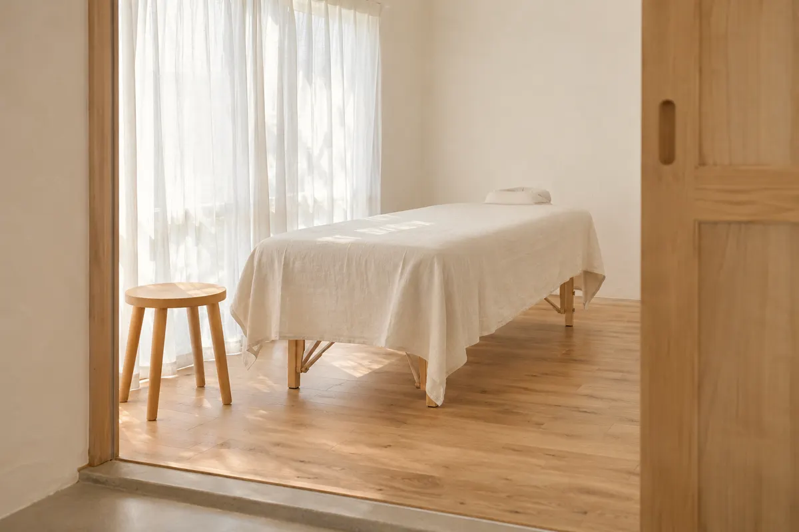
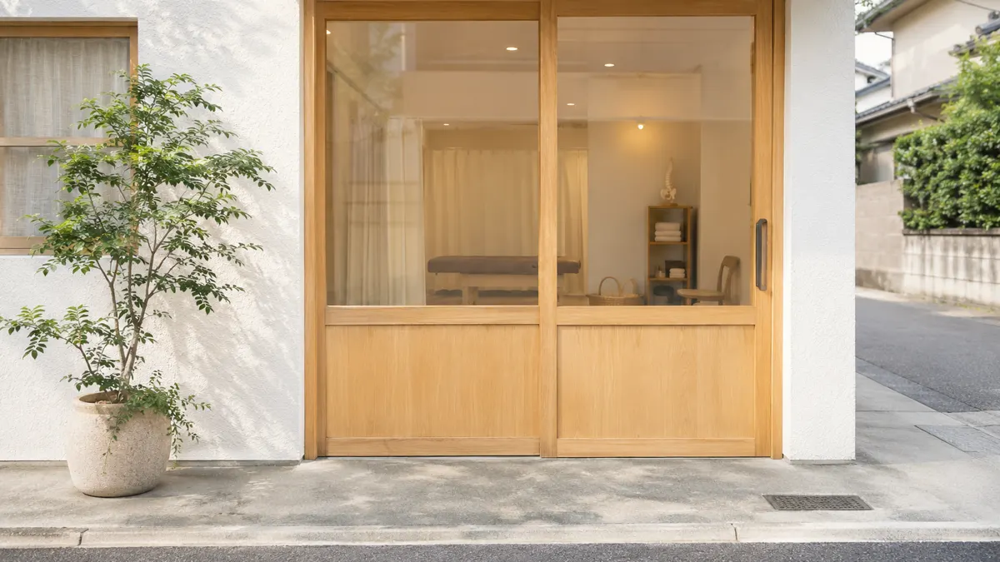

強く押さない、鳴らさない整体です。
まず話を聞いて、姿勢を一緒に見てから、手を当てます。
〇〇駅 南口から徒歩4分・完全予約制・院の前に駐車場2台
- 受付
- 10:00〜13:00／15:00〜20:00
- 休み
- 水曜日（終日）・日曜日の午後
- 場所
- 〇〇駅 南口を出て右へ徒歩4分
かるみが、しないこと。
強く押しません。ボキッと鳴らしません。
痛かったら、いつでも止めます。
-
その場で回数券をすすめません。
通う間隔を決めるのはご本人です。
-
ほかの方と顔を合わせません。
施術室はひとつだけ。予約の時間を分けて、おひとりずつご案内します。
60分の半分は、話す時間です。
手を当てるのは30分。残りの30分は、聞いて、見て、伝えることに使います。
-
15分
話を聞く
「まず、話を聞かせてください。」
いつから、どんなときに気になるのか。急がずにうかがいます。
-
10分
姿勢を一緒に見る
立った姿勢と座った姿勢を、一緒に確かめます。今日どこに手を当てるかは、ここで相談して決めます。
-
30分
手を当てる（施術）
タオルの上から、手のひらでゆっくり整えます。
-
5分
おうちでのケアを伝える
家でできることをお伝えします。
料金は、この3つです。
すべて税込です。保険は使えません。
はじめての方
2,980円（税込）
- 時間
- 約60分
- 中身
- 話を聞く・姿勢を一緒に見る・手を当てる・おうちでのケアを伝える
2回目から
6,600円（税込）
- 時間
- 約45分
回数券（5回）
29,700円（税込）
- 1回あたり
- 5,940円
- 有効期限
- 3か月
- 使える人
- ご家族と一緒に使えます
- やめるとき
- 残りの分を返金します
よく聞かれること。
国家資格の院ですか。保険は使えますか。
いいえ。国家資格の施術所ではありません。保険は使えず、すべて自費です。診断や治療にあたることは行いません。
受けられないのは、どんなときですか。
熱があるとき、けがをして間もないとき、お酒を飲んだあとは、お受けできません。通院中の方と妊娠中の方は、先に医師にご相談ください。
施術のあと、体はどうなりますか。
当日から翌日にかけて、だるさや眠気、張りを感じることがあります。長引くときは、電話でお知らせください。
誰が施術しますか。
汐見 朔（しおみ さく）が担当します。資格は民間のものです。あん摩マッサージ指圧師・柔道整復師などの国家資格ではありません。
何を着て行けばいいですか。
着替えを用意しています。ふだんの服でお越しください。
子ども連れや、車でも行けますか。
ベビーカーのまま入れます。院の前に駐車場が2台あります。
白い壁に、木の引き戸が入口です。

| 月 | 火 | 水 | 木 | 金 | 土 | 日 | |
|---|---|---|---|---|---|---|---|
| 10:00〜13:00 | ○ | ○ | 休 | ○ | ○ | ○ | ○ |
| 15:00〜20:00 | ○ | ○ | 休 | ○ | ○ | ○ | 休 |
休み 水曜日（終日）・日曜日の午後
- 住所
- 〇〇県〇〇市〇〇町7-8-9
- 駅から
- 〇〇駅 南口を出て右へ徒歩4分
- 駐車場
- 院の前に2台